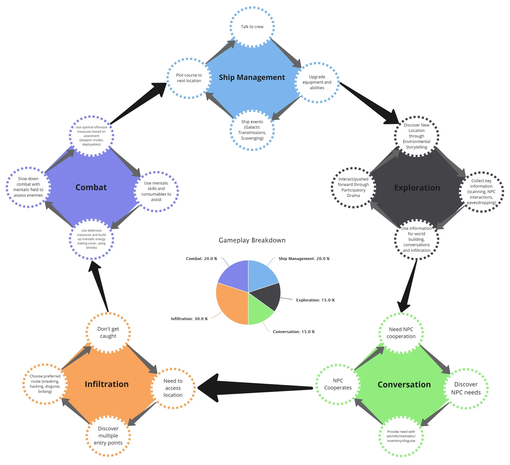

Based on Isaac Asimov's groundbreaking literary saga, Journey to Foundation is an epic sci-fi VR Roleplaying Adventure.

I operated as co-creative director on this project so that I could split my focus between this and the Horizon World project.
I had the amazing opportunity to work closely with Archiact's Art Director and Executive Producer who had both previously worked on the Mass Effect and Dragon Age series and I learnt a lot from them. One of my goals on this project was to make a larger narrative adventure built upon the tools and systems we originally built for Flourish. I laid out a lot of the core of the project setting processes, frameworks and goals.


I was primarily responsible for directing and leading the narrative and UX teams and architecting their underlying interaction systems. I'm particularly proud of the narrative we created as it was consistently given top marks in reviews. A mantra we used was "participatory drama", where we wanted players to feel involved in the conversations through physical actions and not just menu selections. This ended up as part of the "boss fights" in the final product.


Key Contributions
- Co-directed creative vision; worked closely with an Art Director and Executive Producer from Mass Effect/Dragon Age
- Led narrative, UX and gameplay teams through development
- Built upon tools and systems created for Flourish project
- Narrative was cited as the 'main highlight' in critical reviews
- Collaborated with Art Director and Executive Producer on world-building